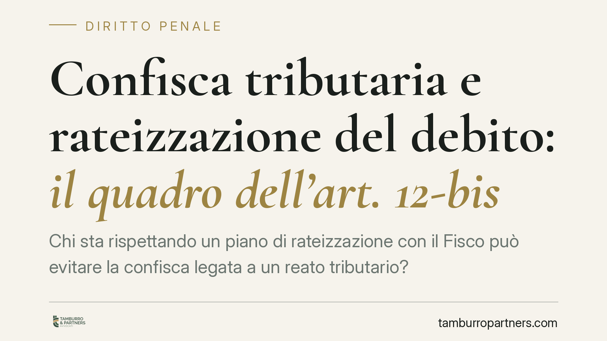

Confisca tributaria e rateizzazione del debito: il quadro dell'art. 12-bis
Chi sta rispettando un piano di rateizzazione con il Fisco può evitare la confisca legata a un reato tributario? La questione tocca il rapporto tra riscossione del debito e sanzione penale patrimoniale. Analizziamo il quadro dell'art. 12-bis D.lgs. 74/2000, riformato dal D.lgs. 87/2024, e i principi che la giurisprudenza applica per evitare un doppio prelievo sullo stesso importo.

Il problema: due pretese sullo stesso importo
Nei reati tributari il giudice penale dispone la confisca del profitto, anche nella forma "per equivalente": se il denaro sottratto all'Erario non è più rintracciabile, si aggrediscono altri beni del condannato fino a concorrenza del valore.
Parallelamente, lo stesso debito fiscale resta dovuto all'Agenzia delle Entrate e può essere oggetto di un piano di rateizzazione. Si crea così un rischio evidente: il contribuente potrebbe trovarsi a versare due volte la medesima somma, una all'Erario in via amministrativa e una allo Stato per effetto della confisca penale.
Inquadramento normativo
La disciplina è contenuta nell'art. 12-bis D.lgs. 74/2000, dedicato alla confisca nei reati tributari. La materia è stata riformata dal D.lgs. 87/2024: la formulazione precedente, che collegava la confisca all'impegno di versamento assunto con il Fisco, è stata rivista e ricollocata. Per questa ragione è prudente non riportare come testo vigente le vecchie formule: chi opera deve verificare la versione aggiornata della norma al caso concreto.
In sostanza, l'impianto attuale conferma due idee di fondo. La prima: la confisca non può tradursi in un doppio incasso da parte dello Stato per lo stesso importo. La seconda: il versamento, anche parziale, del debito tributario rileva perché riduce proporzionalmente il profitto confiscabile.
Sul versante della riscossione, la rateizzazione delle somme iscritte a ruolo è regolata dal DPR 602/1973; le soglie e le condizioni di decadenza dal piano sono state più volte modificate e vanno verificate nella versione in vigore al momento della richiesta, perché da esse dipende la tenuta del beneficio.
> Nota redazionale: circola la segnalazione di una pronuncia della Cassazione Penale Sez. III in tema di rateizzazione e confisca. Gli estremi non risultano a oggi verificabili in modo affidabile e pertanto non vengono riportati come dato certo. I principi esposti di seguito riflettono orientamenti consolidati, non una singola decisione non confermata.
Implicazioni pratiche
Occorre distinguere due piani, perché producono effetti diversi.
Sul sequestro preventivo (fase cautelare). Il sequestro mira a garantire la futura confisca. Il fatto che il contribuente stia pagando regolarmente le rate può incidere sulla valutazione del giudice, soprattutto sotto il profilo del *periculum*: se il debito si sta già riducendo in modo ordinato e non emerge un concreto pericolo di dispersione del patrimonio, la misura cautelare può risultare non più proporzionata nella sua estensione.
Sulla confisca definitiva. Qui il principio operativo è lo scomputo: le somme effettivamente versate all'Erario vanno sottratte dall'importo confiscabile. Il profitto del reato, infatti, si riduce man mano che il debito viene onorato. La confisca può colpire solo ciò che residua, non l'intero importo originario.
Il punto di equilibrio è il divieto di doppio incasso, letto insieme al principio di proporzionalità. Un piano di rateizzazione regolarmente eseguito è un elemento a favore del contribuente; non è però uno scudo automatico. Se emerge un concreto pericolo di dispersione dei beni, o se il piano decade per mancato pagamento, la tutela viene meno e la confisca riprende la sua piena portata.
Cosa fare in concreto
- Documenta ogni versamento. Conserva ricevute e quietanze di ciascuna rata: sono la prova dello scomputo e del comportamento collaborativo.
- Rispetta le scadenze. Verifica le condizioni di decadenza del tuo piano ai sensi del DPR 602/1973 nella versione vigente: una rata saltata può far cadere il beneficio e riaprire l'intero importo alla confisca.
- Segnala la rateizzazione al giudice penale. Porta all'attenzione del procedimento il piano in corso e i pagamenti già eseguiti, chiedendo che ne sia tenuto conto sul sequestro e, in prospettiva, sulla confisca.
- Chiedi lo scomputo espresso. In sede di confisca, domanda che l'importo sia ridotto delle somme già versate, per evitare il doppio prelievo.
- Coordina difesa penale e assistenza tributaria. La strategia funziona solo se il piano con il Fisco e la posizione nel processo penale vengono gestiti in modo integrato.
Consigliamo di affrontare questi passaggi con un confronto tempestivo tra chi segue il contenzioso tributario e chi cura la difesa penale: è il coordinamento, più del singolo adempimento, a determinare la tenuta della posizione.
---
Contributo informativo a cura di Tamburro & Partners - Avv. Giuseppe Tamburro. Non costituisce parere legale.
Ogni condominio ha una storia a sé.
Se gestisci un'amministrazione e vuoi un confronto su una specifica questione condominiale, scrivi allo studio. Ti rispondiamo entro un giorno lavorativo.